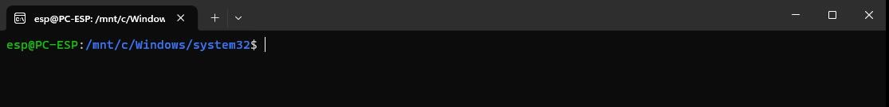
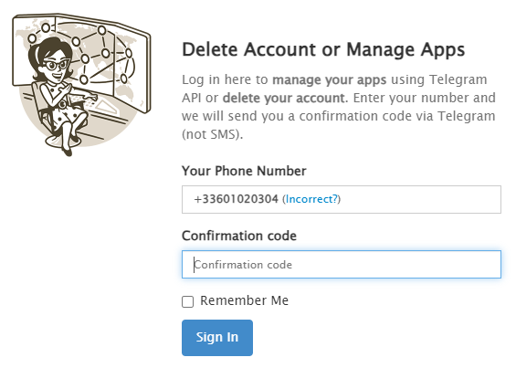
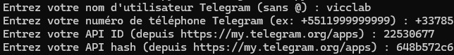
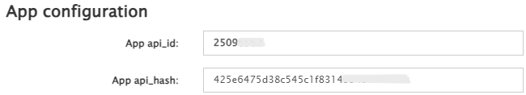

Telepathy : Investigations sur Telegram
La machine virtuelle dispose d'une distribution Linux intégrée, qui vous permet d'utiliser des outils de recherche en sources ouvertes ou d'aide aux investigations.
Choisissez ci-dessous le type d'investigations que vous souhaitez mener et laissez-vous guider dans la création de la ligne de commande nécessaire.
Cette ligne de commande devra simplement être copiée/collée dans le terminal WSL.



Telepathy
Telepathy est un système permettant de procéder à des investigations ou de récupérer des données présentes sur l'application "Telegram".
Attention, certaines données récupérées peuvent être couvertes par les droits RGPD. Une fois celles-ci entrées en procédure, vous devez impérativement les supprimer de votre système. Leur préservation est interdite.
Avant de pouvoir utiliser "Telepathy", vous devez disposer d'un compte "Telegram" et suivre les indications ci-dessous :
Paramétrage initial
1) Procurez-vous un numéro "API"
Assurez-vous d'être connectés à votre compte "Telegram" et de disposer du numéro de téléphone auquel il est lié. Rendez-vous ensuite sur le site "https://my.telegram.org".
Il vous est demandé d'entrer le numéro de téléphone de votre compte "Telegram". Un code vous sera envoyé en message privé sur l'application, qu'il faudra indiquer sur le site internet.

Cliquez sur "API development tools".
S'il vous est demandé des informations pour créer votre API, indiquez-en au hasard (inutile de renseigner la case "URL").
Laissez cette page ouverte, vous aurez besoin de certaines informations qu'elle contient.
2) Procédez au paramétrage de "Telepathy"
Lancez ensuite le terminal "WSL" comme expliqué au début de la page. Utilisez la commande "telepathy" et suivez ces étapes :

Au premier démarrage de Telepathy, il vous est demandé d'entrer certaines informations. Ces dernières seront sauvegardées. Vous n'aurez normalement pas à les modifier.
- Nom d'utilisateur et numéro de téléphone : Se trouvent dans les paramètres du compte Telegram
- API ID et API Hash : Ces éléments se trouvent sur le site internet "my.telegram.org", consulté précédemment

Une fois le premier paramétrage effectué, lancez le programme à l'aide de la commande "telepathy".
Plusieurs informations vous seront demandées afin de pouvoir lancer le téléchargement :
- Nom du canal ou du compte à scraper :
Cette information est disponible dans les paramètres du compte ou de l'utilisateur.
Attention à bien respecter le format (https://t.me/nom_du_canal ou @nom_de_l'utilisateur)
- Nom de sortie du fichier :
Il s'agit du nom qui sera donné au dossier créé avec les données scrapées.
Attention à ne pas utiliser de caractères spéciaux ni d'espace.
- Date de début : (appuyer directement sur "Enter" pour utiliser la valeur par défaut)
Il s'agit de la date à partir de laquelle seront récupérées les données.
Vous n'êtes pas obligé de renseigner ce champ, qui prendra par défaut la valeur antérieure d'un an par rapport à la date du jour.
- Date de fin : (appuyer directement sur "Enter" pour utiliser la valeur par défaut)
Il s'agit de la date jusqu'à laquelle seront récupérées les données.
Vous n'êtes pas obligé de renseigner ce champ, qui prendra par défaut la date du jour.
- Mot-clé : (appuyer directement sur "Enter" pour ne pas en utiliser)
En cas de recherche de post présentant un terme en particulier.
- Nombre maximum de messages à scraper : (appuyer directement sur "Enter" pour utiliser la valeur par défaut)
Limite le nombre de messages récupérés. Permet de limiter le temps de traitement.
La valeur par défaut est de 1 000 000 messages.
- Limite de temps en secondes : (appuyer directement sur "Enter" pour utiliser la valeur par défaut)
Permet de limiter le temps de traitement.
La valeur par défaut est de 21 600 secondes.
Par intermittence, il pourra vous être demandé de renseigner à nouveau le numéro de téléphone lié à votre compte "Telegram", ainsi que le nouveau code reçu en message privé.
Une fois les données récupérées, un dossier sera créé sur le "Bureau" de votre compte "Windows". Il contiendra un document de type tableur reprenant les messages récupérés. Si celui-ci contient un média (photo, vidéo, etc.), un lien "cliquable" sera présent, permettant d'accéder à ce contenu.
Récupération d'un "canal" Telegram
Utilisateur
aide test